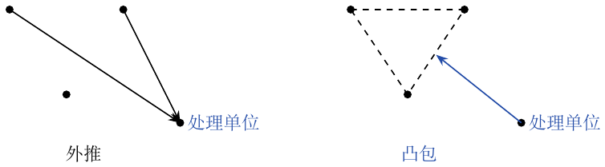

第15章：合成控制
若找不到与处理城市或州相似的单个对照单位，就把多个未处理单位组合为合成对照。城市、州的聚合数据本身也可以组成面板。因果比较需要供体未受处理、无预期效应或溢出，并有可信的稳定关系连接干预前后的未处理结果。
共有 \(J+1\) 个单位。单位1接受处理，\(2,\ldots,J+1\) 未接受处理，组成供体库。\(Y_{jt}^{I}\)、\(Y_{jt}^{N}\) 是单位 \(j\) 在时间 \(t\) 有干预和无干预的潜在结果。处理从 \(T_0\) 开始。对 \(t>T_0\)， \[\tau_{1t}=Y_{1t}^{I}-Y_{1t}^{N}.\] 已处理结果是事实，未处理结果是反事实；效应是时间的函数。 给定权重 \(W=(w_2,\ldots,w_{J+1})\)， \[\widehat Y_{1t}^{N}=\sum_{j=2}^{J+1}w_jY_{jt}.\] 可用回归选择这些权重：最小化干预前处理单位与供体加权平均之间的平方距离。
把合成控制看作回归。
用供体州构建一个虚拟加州。矩阵以年份为行、州为列，元素为香烟销量。将加州序列设为 \(Y\)，其他州序列设为 \(X\)，回归 \(Y\sim X\)。例子中的权重有 \(-0.436\) 和 \(-0.032\)（39个州对应39个权重）。它们的加权和就是虚拟州，权重的选择使虚拟州与处理州尽量接近。
这样可能过拟合：虚拟州在干预前几乎与加州重合，干预后却剧烈波动。供体序列较多时，可考虑用 Ridge 或 Lasso 正则化回归。
避免外推。
前述过拟合归因于外推：权重把观测推到了数据范围以外。施加凸组合约束。合成控制仍为 \(\widehat Y_{1t}^{N}=\sum_{j=2}^{J+1}w_jY_{jt}\)，但选择 \(W\) 来最小化 \[\|X_1-X_0W\|_V= \left\{\sum_{h=1}^{k}v_h\left(X_{h1}-\sum_{j=2}^{J+1}w_jX_{hj}\right)^2\right\}^{1/2}, \qquad w_j\ge0,\quad\sum_{j=2}^{J+1}w_j=1.\] 两幅图分别画出：从供体点无约束外推到三角形外的处理点；以及将拟合限制在供体凸包内。
\(v_h\) 反映各变量在匹配处理单位和合成控制时的重要性；不同 \(v_h\) 会得到不同权重。可把各变量标准化为均值零、方差一，或给更能预测 \(Y\) 的变量更高权重。这里的实现给各变量同等重要性：定义损失函数，用 SciPy 做二次优化，要求权重和为一，并将每个权重限制在 \([0,1]\)。这个例子的权重较稀疏，且和为一（示例向量含多个零及一个约为 \(0.3852\) 的元素）。
显著性与安慰剂比较。
采用受置换检验启发的安慰剂比较。对39个州逐一重新拟合合成控制、估计效应。加州给出真实干预的估计，其他州给出安慰剂效应。若没有处理的州也出现很大效应，就有问题。干预后的变异大于干预前；一些单位在干预前就拟合不好，应剔除。对所有分配统一应用前期拟合阈值： \[\mathrm{MSE}=\frac1N\sum_t(Y_t-\widehat Y_t^{\mathrm{synth}})^2.\] 算出各州效应后，再计算 \[p=\frac1{J_{\rm eligible}}\sum_{j\in\mathcal E}\mathbf1\{\hat\tau_j\le\hat\tau_{\mathrm{California}}\},\] 其中 \(\mathcal E\) 包括所有合格分配及实际分配。加州效应为负，所以数的是至少同样负的效应。例子中，加州相对于安慰剂效应显得很极端。 称它为精确 \(p\) 值还需分配机制或可交换性依据；在观察研究中，安慰剂排名本身是一种诊断。凸权重限制外推，却不保证反事实拟合正确。

外推与凸包约束的几何示意。